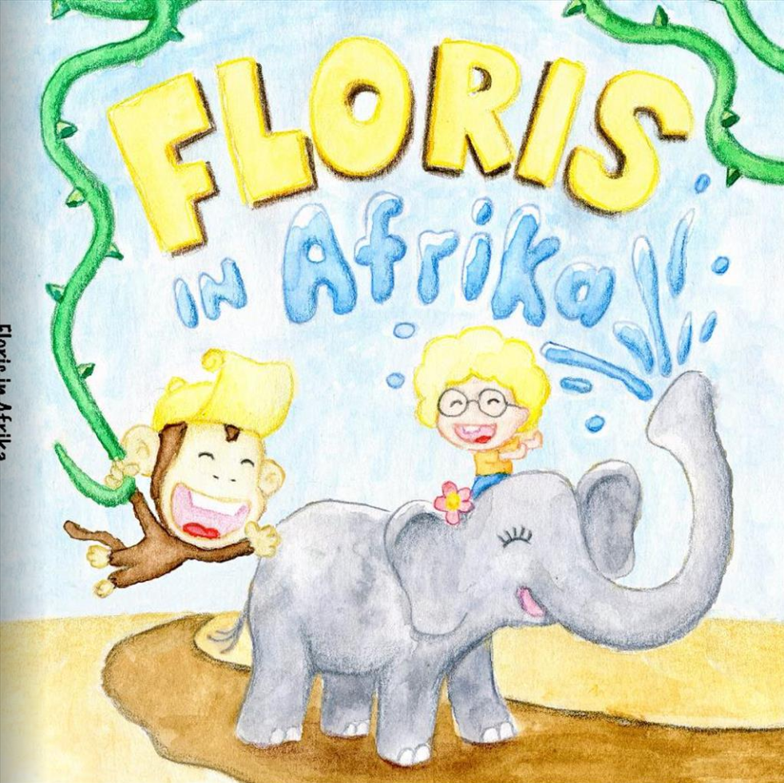
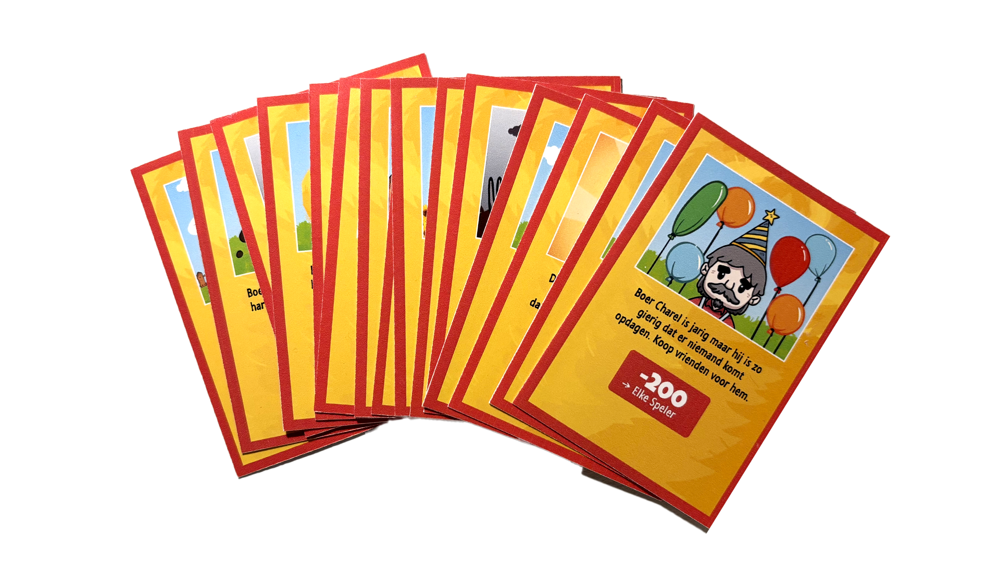
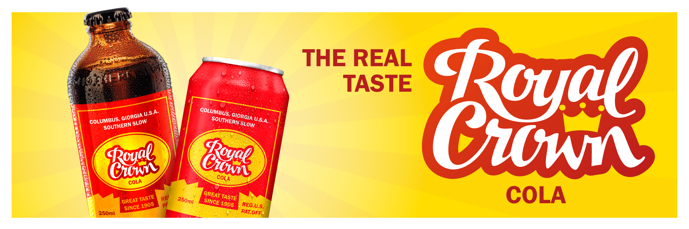

Kinderboek Design
Ontwerp en uitvoering van een handgeschilderd stickerboek en menukaart. Ik ben trots op het realiseren van een volledig eigen boek.



Creatief / Minimalistisch / Efficiënt
Designer die buiten de standaard Pinterest-kaders denkt en focust op wat echt werkt.

Ik ben Floris Ooms. Mijn aanpak is simpel: ik geloof niet in de standaard Pinterest-designs. Tijdens mijn stage bij Adworks heb ik geleerd hoe belangrijk het is om realistische opdrachten te maken die echt werken in de praktijk. Hoewel ik mijn weg in het programmeren nog aan het vinden ben, ligt mijn kracht in het durven afwijken van de norm.
Waarom DVO? Omdat ik een plek zocht waar mijn creativiteit een doel krijgt.
Ontwerp en uitvoering van een handgeschilderd stickerboek en menukaart. Ik ben trots op het realiseren van een volledig eigen boek.

Inzetten van technische print-vaardigheden voor unieke raamontwerpen en kalenders tijdens mijn stageperiode.



Een nieuw concpet logo en meer gemaakt voor Royal Crown cola, hier voor heb ik tientallen papier schetsen en digitale schetsen gemaakt.

